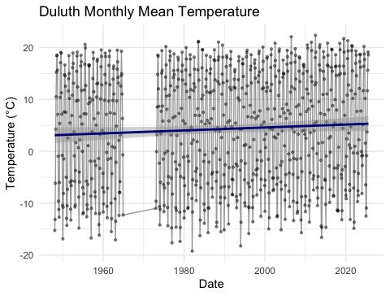
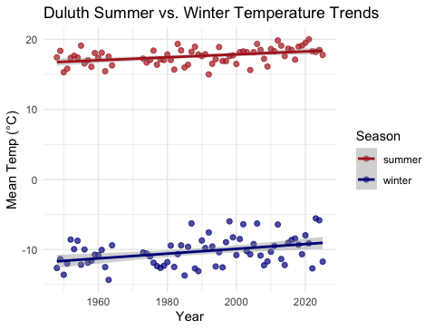

Lecture 07 — Real Climate Data in R
Downloading, summarizing, and modeling Duluth weather station data
2026-08-27
Where we left off (Lecture 06)
- Linear regression — fit a calibration curve (area ~ mass) with
lm() - Reading
summary()— slope b, intercept a, R², p-value for the slope - Least squares — the line that minimizes the sum of squared residuals
- Assumption checks — residual vs. fitted plot, QQ plot, Shapiro-Wilk on residuals
predict()— confidence intervals (mean Y) vs. prediction intervals (one new Y)- Applied it — converted paper tracing mass into predicted leaf area (cm²)
Note
✅ Transition
So far every regression we have run used a dataset you were handed. Today we download real data from inside R for the first time — long-term weather records for Duluth, MN — and use that same regression toolkit to ask a much bigger question: is it getting warmer?
Goals for Today
- Download real weather station data from inside R (no Excel step!)
- Explore raw daily data — and see why raw data alone is hard to read
- Summarize the same data by day, week, month, and year — and watch the story get clearer
- Reuse
lm()to estimate the rate of change (slope) in temperature over time - Use
case_when()to build a new categorical variable — summer vs. winter - Compare how fast each season is warming
Tip
🖐 Try it yourself
By the end you’ll have downloaded a real NOAA climate record and estimated how many degrees per decade Duluth has warmed.
Tools today:
GSODR,tidyverse,lubridate
Textbook:
- 📖 R for Data Science 2e — Hadley Wickham
- 📖 Data Carpentry — R for Ecologists
Naming conventions:
- data frames →
_df - plots →
_plot - models →
_model
How to Use These Slides — Predict · Type · Run
This lecture runs in four short chunks. After each chunk you switch to the activity and type the code yourself.
For every code block, do three things:
- Predict — before it runs, say what you think the output will be
- Type it out by hand — do not copy-paste
- Run it and compare to your prediction
Note
✅ Why bother? (the evidence)
- Before
get_GSOD()runs, guess the row count or the shape of the trend — that guess is what your brain checks the real output against. - Retyping
group_by(YEAR, MONTH)instead of pasting it is what makes you notice you meantYEARalone. - Downloading, then immediately summarizing in the same sitting, is what keeps the whole workflow — not just isolated commands — in your head.
🧩 Chunk 1 of 4 · Download & Explore Raw Data
We will cover: where GSOD data comes from, downloading it with get_GSOD(), trimming columns, and plotting the raw daily record.
Tip
🖐 After this chunk: Activity Parts 1–3 (download, trim, and raw-plot the Duluth data).
Where Does This Data Come From?
GSOD = Global Surface Summary of the Day, maintained by NOAA. It contains daily weather observations from thousands of stations worldwide, some going back to the 1940s.
The GSODR package lets us pull this data directly into R — no manual download, no Excel, no copy-paste.
The station we’ll use:
- Duluth International Airport
- Station ID
727450-14913 - Daily records back to 1948 — 78 years of data
Why this matters:
- This is the same kind of messy, real-world data you’ll meet in your own research
- Today’s workflow — download → explore → summarize → model — is the same workflow you’ll use for your final project
📖 R4DS Ch. 3 — every analysis starts with getting data into R
Load Libraries and Download the Data
Rows: 25,441
Columns: 47
$ STNID <chr> "727450-14913", "727450-14913", "727450-14913", "7274…
$ NAME <chr> "DULUTH INTERNATIONAL AIRPORT", "DULUTH INTERNATIONAL…
$ CTRY <chr> "US", "US", "US", "US", "US", "US", "US", "US", "US",…
$ COUNTRY_NAME <chr> "UNITED STATES", "UNITED STATES", "UNITED STATES", "U…
$ ISO2C <chr> "US", "US", "US", "US", "US", "US", "US", "US", "US",…
$ ISO3C <chr> "USA", "USA", "USA", "USA", "USA", "USA", "USA", "USA…
$ STATE <chr> "MN", "MN", "MN", "MN", "MN", "MN", "MN", "MN", "MN",…
$ LATITUDE <dbl> 46.844, 46.844, 46.844, 46.844, 46.844, 46.844, 46.84…
$ LONGITUDE <dbl> -92.187, -92.187, -92.187, -92.187, -92.187, -92.187,…
$ ELEVATION <dbl> 436.8, 436.8, 436.8, 436.8, 436.8, 436.8, 436.8, 436.…
$ BEGIN <int> 19480101, 19480101, 19480101, 19480101, 19480101, 194…
$ END <int> 20250827, 20250827, 20250827, 20250827, 20250827, 202…
$ YEARMODA <date> 1948-01-01, 1948-01-02, 1948-01-03, 1948-01-04, 1948…
$ YEAR <int> 1948, 1948, 1948, 1948, 1948, 1948, 1948, 1948, 1948,…
$ MONTH <int> 1, 1, 1, 1, 1, 1, 1, 1, 1, 1, 1, 1, 1, 1, 1, 1, 1, 1,…
$ DAY <int> 1, 2, 3, 4, 5, 6, 7, 8, 9, 10, 11, 12, 13, 14, 15, 16…
$ YDAY <int> 1, 2, 3, 4, 5, 6, 7, 8, 9, 10, 11, 12, 13, 14, 15, 16…
$ TEMP <dbl> -8.2, -4.1, -8.4, -6.5, -2.9, -7.8, -8.8, -4.0, -5.8,…
$ TEMP_ATTRIBUTES <int> 18, 24, 24, 24, 24, 24, 24, 24, 24, 24, 24, 24, 24, 2…
$ DEWP <dbl> -9.9, -6.5, -10.8, -8.8, -5.9, -12.2, -13.2, -5.8, -6…
$ DEWP_ATTRIBUTES <int> 18, 24, 24, 24, 24, 24, 24, 24, 24, 24, 24, 24, 24, 2…
$ SLP <dbl> 1019.8, 1011.1, 1010.0, 1016.8, 1016.3, 1019.3, 1015.…
$ SLP_ATTRIBUTES <int> 18, 24, 24, 24, 24, 24, 24, 24, 24, 24, 24, 24, 24, 2…
$ STP <dbl> 965.3, 958.0, 956.6, 963.1, 962.9, 965.6, 961.8, 957.…
$ STP_ATTRIBUTES <int> 18, 24, 24, 24, 24, 24, 24, 24, 24, 23, 24, 24, 24, 2…
$ VISIB <dbl> 22.0, 22.7, 18.0, 22.4, 23.2, 24.0, 23.7, 15.0, 16.6,…
$ VISIB_ATTRIBUTES <int> 18, 24, 24, 24, 24, 24, 24, 24, 24, 24, 24, 24, 24, 2…
$ WDSP <dbl> 4.4, 4.3, 3.0, 4.9, 6.4, 8.3, 3.8, 2.8, 5.9, 2.7, 5.5…
$ WDSP_ATTRIBUTES <int> 18, 24, 24, 24, 24, 24, 24, 24, 24, 24, 24, 24, 24, 2…
$ MXSPD <dbl> 8.2, 8.8, 7.2, 8.2, 11.8, 11.8, 7.2, 6.2, 11.8, 5.2, …
$ GUST <dbl> NA, NA, NA, NA, NA, NA, NA, NA, NA, NA, NA, NA, NA, N…
$ MAX <dbl> -3.1, -2.0, -5.4, -1.5, 1.3, -1.7, -2.6, -2.0, -2.2, …
$ MAX_ATTRIBUTES <chr> NA, NA, NA, NA, NA, "*", NA, NA, "*", NA, NA, "*", "*…
$ MIN <dbl> -15.6, -8.7, -12.8, -9.8, -7.0, -15.4, -15.0, -6.5, -…
$ MIN_ATTRIBUTES <chr> "*", NA, "*", NA, NA, NA, "*", NA, NA, "*", "*", NA, …
$ PRCP <dbl> 0.00, 0.00, 0.00, 0.00, 0.00, 0.00, 0.00, 7.87, 0.00,…
$ PRCP_ATTRIBUTES <chr> "G", "G", "G", "G", "G", "G", "G", "G", "G", "G", "G"…
$ SNDP <dbl> 279.4, 279.4, 279.4, 279.4, 248.9, 248.9, 248.9, 248.…
$ I_FOG <dbl> 0, 1, 1, 1, 0, 0, 0, 0, 0, 0, 1, 0, 0, 0, 0, 0, 0, 0,…
$ I_RAIN_DRIZZLE <dbl> 0, 0, 0, 0, 0, 0, 0, 1, 1, 0, 0, 0, 0, 0, 0, 0, 0, 0,…
$ I_SNOW_ICE <dbl> 1, 1, 1, 1, 1, 0, 0, 1, 1, 0, 1, 1, 1, 0, 1, 0, 0, 1,…
$ I_HAIL <dbl> 0, 0, 0, 0, 0, 0, 0, 0, 0, 0, 0, 0, 0, 0, 0, 0, 0, 0,…
$ I_THUNDER <dbl> 0, 0, 0, 0, 0, 0, 0, 0, 0, 0, 0, 0, 0, 0, 0, 0, 0, 0,…
$ I_TORNADO_FUNNEL <dbl> 0, 0, 0, 0, 0, 0, 0, 0, 0, 0, 0, 0, 0, 0, 0, 0, 0, 0,…
$ EA <dbl> 0.3, 0.4, 0.3, 0.3, 0.4, 0.2, 0.2, 0.4, 0.4, 0.1, 0.3…
$ ES <dbl> 0.3, 0.5, 0.3, 0.4, 0.5, 0.3, 0.3, 0.5, 0.4, 0.1, 0.3…
$ RH <dbl> 87.5, 83.4, 82.8, 83.7, 79.8, 70.7, 70.5, 87.3, 91.9,…What just happened:
get_GSOD()reached out to NOAA’s servers and pulled every daily record for this stationyears = 1948:2025is a vector — shorthand for “every year in this range”- This download can take a minute — daily data for 78 years is a lot of rows!
Important
Don’t panic at the row count. Daily data for 78 years ≈ 28,000 rows. We will fix that with summarizing.
Trim to What We Need
STNID NAME YEARMODA YEAR MONTH DAY TEMP
<char> <char> <Date> <int> <int> <int> <num>
1: 727450-14913 DULUTH INTERNATIONAL AIRPORT 1948-01-01 1948 1 1 -8.2
2: 727450-14913 DULUTH INTERNATIONAL AIRPORT 1948-01-02 1948 1 2 -4.1
3: 727450-14913 DULUTH INTERNATIONAL AIRPORT 1948-01-03 1948 1 3 -8.4
4: 727450-14913 DULUTH INTERNATIONAL AIRPORT 1948-01-04 1948 1 4 -6.5
5: 727450-14913 DULUTH INTERNATIONAL AIRPORT 1948-01-05 1948 1 5 -2.9
6: 727450-14913 DULUTH INTERNATIONAL AIRPORT 1948-01-06 1948 1 6 -7.8
MXSPD PRCP I_SNOW_ICE
<num> <num> <num>
1: 8.2 0 1
2: 8.8 0 1
3: 7.2 0 1
4: 8.2 0 1
5: 11.8 0 1
6: 11.8 0 0Why select() here:
get_GSOD()returns 40+ columns — station metadata, multiple temperature scales, attribute flags- We only need a handful for this question
- This is the same
select()skill from Lecture 02 — applied to a much wider real-world file
📖 R4DS Ch. 3.2 — select() for picking columns
Live Demo — Watch It Break (on purpose)
NOAA’s column names are UPPERCASE. I’ll forget that:
R errors:
Error in `select()`:
! Can't select columns that don't exist.
✖ Column `temp` doesn't exist.The fix — match the exact case:
Tip
✅ Why show a broken run?
R is case-sensitive — temp ≠ TEMP. When a column “doesn’t exist,” run names(df) and check capitalization. Downloaded data rarely uses the names you’d guess.
First Look — Plot the Raw Daily Data
Note
🔮 Predict first: This plots ~28,000 daily points. Before you see it — will a long-term warming trend be visible, or will something else dominate the picture?
# Plot every single daily temperature ---------------------
raw_temp_plot <- dlh_temp_df %>%
ggplot(aes(x = YEARMODA, y = TEMP)) +
geom_point(alpha = 0.2, size = 0.5) +
geom_line(alpha = 0.3) +
labs(
title = "Duluth Daily Mean Temperature, 1948–2025",
x = "Date",
y = "Temperature (°C)"
) +
theme_minimal()
raw_temp_plot
What do you see?
- A dense, fuzzy band — the seasonal cycle (winter ↔︎ summer) dominates the plot
- ~28,000 points overlapping each other
- Any long-term trend is completely hidden inside the seasonal noise
The problem: raw daily data shows you everything — which means it can hide the one thing you’re looking for.
🛑 Pause — Do Activity Parts 1–3 Now
Download the Duluth record with get_GSOD(), trim to the columns you need, and plot the raw daily temperatures. Predict what the raw plot will look like before you run it.
🧩 Chunk 2 of 4 · Summarize to Reveal the Trend
We will cover: why summarizing helps, and group_by() %>% summarize() at the monthly and yearly levels — watching the story get clearer.
Tip
🖐 After this chunk: Activity Parts 4–5 (summarize by month, then by year).
The Fix — Summarize the Story Out of the Noise
The idea: group the data into bigger time chunks, then take the mean within each chunk.
| Summary level | group_by() |
Rows after summary |
|---|---|---|
| Daily (raw) | none | ~28,000 |
| Monthly | YEAR, MONTH |
~936 |
| Yearly | YEAR |
78 |
Each step trades detail for clarity. We lose day-to-day weather noise, but the climate signal becomes visible.
This is the same logic as Lecture 03’s group_by() + summarize() — just applied to time instead of to side (sunny/shady).
Tip
🖐 Try it yourself
Watch the same underlying data tell three different stories as we change the summary level.
Summarize by Month
# Plot the monthly means ----------------------------------
month_temp_plot <- dlh_month_df %>%
ggplot(aes(x = YEARMODA, y = TEMP)) +
geom_point(alpha = 0.4, size = 0.8) +
geom_line(alpha = 0.4) +
geom_smooth(method = "lm", color = "darkblue") +
labs(
title = "Duluth Monthly Mean Temperature",
x = "Date",
y = "Temperature (°C)"
) +
theme_minimal()
month_temp_plot
Better — but still busy.
- The seasonal cycle (summer peaks, winter dips) is now a clean, regular wave
- A faint regression line is visible, but the seasonal swing still dominates the y-axis range
first(YEARMODA) keeps one representative date per month so we can still plot on a time axis.
Summarize by Year — The Story Gets Clear
# A tibble: 6 × 3
YEAR YEARMODA TEMP
<int> <date> <dbl>
1 1948 1948-01-01 3.76
2 1949 1949-01-01 4.10
3 1950 1950-01-01 1.60
4 1951 1951-01-01 2.41
5 1952 1952-01-01 4.55
6 1953 1953-01-01 4.55Now the trend is obvious.
- The seasonal noise is completely averaged out
- 78 points instead of 28,000 — and the story is clearer, not weaker
- The blue/red trend line is the same kind of
geom_smooth(method = "lm")line from Lecture 03
This is the power of group_by() %>% summarize(): the right level of summary reveals the signal.
Same Data, Three Levels — Side by Side
| Level | What it shows | What it hides |
|---|---|---|
| Daily | every weather event | the long-term trend |
| Monthly | the seasonal cycle | day-to-day noise |
| Yearly | the climate trend | season, weather events |
Key idea: there is no single “correct” level — it depends on your question. Want to know about a heat wave? Use daily. Want to know about climate change? Use yearly.
Important
Summarizing is not “losing information” — it’s choosing which question you’re answering.
📖 R4DS Ch. 3.5 — group_by() + summarize() workflow
🛑 Pause — Do Activity Parts 4–5 Now
Summarize the daily data to monthly and yearly means, and plot each. Predict how many rows each summary has, and what trend appears, before you run it.
🧩 Chunk 3 of 4 · Model the Rate of Change
We will cover: reusing lm(TEMP ~ YEAR) to estimate the warming slope, and converting it to °C per decade.
Tip
🖐 After this chunk: Activity Part 6 (fit the trend model and read the slope).
What Is the Rate of Change? — Reusing lm()
Note
🔮 Predict first: If Duluth is warming, will the slope of TEMP ~ YEAR be positive or negative? Guess the size too — closer to 0.02 or 2 °C per year?
Call:
lm(formula = TEMP ~ YEAR, data = dlh_year_df)
Residuals:
Min 1Q Median 3Q Max
-1.99794 -0.51059 0.00688 0.49950 1.90458
Coefficients:
Estimate Std. Error t value Pr(>|t|)
(Intercept) -49.096842 9.119103 -5.384 9.77e-07 ***
YEAR 0.026872 0.004585 5.860 1.49e-07 ***
---
Signif. codes: 0 '***' 0.001 '**' 0.01 '*' 0.05 '.' 0.1 ' ' 1
Residual standard error: 0.8774 on 68 degrees of freedom
Multiple R-squared: 0.3356, Adjusted R-squared: 0.3258
F-statistic: 34.34 on 1 and 68 DF, p-value: 1.489e-07This is exactly Lecture 05’s lm() syntax — only now:
X=YEAR(instead of paper mass)Y=TEMP(instead of paper area)- The slope is no longer “cm² per gram” — it’s °C per year
H₀: β = 0 (no warming trend)
Hₐ: β ≠ 0 (temperature is changing over time)
Extracting and Interpreting the Slope
Slope (b) = 0.0269 °C/yearWarming rate = 0.269 °C per decadeWhy multiply by 10?
- The raw slope is in °C per year — a small, hard-to-feel number
- Multiplying by 10 converts to °C per decade — easier to communicate
- This is the same
coef()extraction skill from Lecture 05
b = 0.02 °C/year → 0.2 °C/decade — small year to year, but adds up over 78 years
Does the Same Pattern Hold at the Monthly Level?
Call:
lm(formula = TEMP ~ YEARMODA, data = dlh_month_df)
Residuals:
Min 1Q Median 3Q Max
-23.285 -9.826 1.130 10.303 17.402
Coefficients:
Estimate Std. Error t value Pr(>|t|)
(Intercept) 3.734e+00 4.954e-01 7.538 1.25e-13 ***
YEARMODA 7.788e-05 4.588e-05 1.698 0.0899 .
---
Signif. codes: 0 '***' 0.001 '**' 0.01 '*' 0.05 '.' 0.1 ' ' 1
Residual standard error: 11.04 on 834 degrees of freedom
Multiple R-squared: 0.003444, Adjusted R-squared: 0.002249
F-statistic: 2.882 on 1 and 834 DF, p-value: 0.08995Compare to the yearly model:
- Same overall warming direction
- More residual scatter, because each point still carries some seasonal “memory”
- The yearly summary gives the cleanest, most interpretable slope for a long-term trend question
This is why we chose the yearly summary for our headline result.
🛑 Pause — Do Activity Part 6 Now
Fit lm(TEMP ~ YEAR) on the yearly means, pull the slope, and convert it to °C per decade. Predict the sign and rough size before you run summary().
🧩 Chunk 4 of 4 · Seasons — Is Winter Warming Faster?
We will cover: building a season with case_when(), summarizing by year within season, plotting both, and fitting a separate lm() per season to compare rates.
Tip
🖐 After this chunk: Activity Parts 7–11 (season variable, per-season models, and the results paragraph).
A New Question — Is Every Season Warming the Same?
So far we’ve asked: is Duluth warming overall?
New question: is winter warming at the same rate as summer?
This matters biologically — earlier springs, shorter ice seasons, and changing growing seasons don’t depend on the annual average. They depend on which season is changing fastest.
Plan:
- Label every day as summer or winter using
case_when() - Summarize mean temperature by year within each season
- Fit a separate
lm()for each season - Compare the two slopes
Tip
🖐 Try it yourself
Make a prediction now: which season do you think is warming faster — winter or summer? We’ll find out with real data.
Building a Season Variable with case_when()
Note
🔮 Predict first: case_when() labels each day summer / winter / shoulder. Before the count() runs — which category will have the most rows, and why?
# Label each day as summer, winter, or shoulder season ----
dlh_season_df <- dlh_temp_df %>%
mutate(
season = case_when(
MONTH %in% c(6, 7, 8) ~ "summer",
MONTH %in% c(12, 1, 2) ~ "winter",
TRUE ~ "shoulder"
)
)
# Quick check - did it work? -------------------------------
dlh_season_df %>%
count(season) season n
<char> <int>
1: shoulder 12718
2: summer 6436
3: winter 6287Reading case_when():
- Each line is read top to bottom: condition
~result MONTH %in% c(6, 7, 8)— “is MONTH one of 6, 7, or 8?”TRUE ~ "shoulder"— the catch-all for everything not matched above (spring/fall)
This is a new, more powerful cousin of the ifelse() you’ve used before — case_when() handles many conditions cleanly.
📖 R4DS Ch. 3.4 — case_when() for multi-way mutate()
Summarize Each Season by Year
# A tibble: 6 × 3
# Groups: YEAR [3]
YEAR season TEMP
<int> <chr> <dbl>
1 1948 summer 17.4
2 1948 winter -12.6
3 1949 summer 18.4
4 1949 winter -11.4
5 1950 summer 15.3
6 1950 winter -13.6What changed:
filter()drops shoulder-season days — we only want the two extremesgroup_by(YEAR, season)— grouping by two variables gives us one mean temperature per year per season
This produces a tidy long-format data frame — perfect for both plotting and modeling.
Plot Both Seasons Together
# Plot both seasons with separate trend lines --------------
season_temp_plot <- season_year_df %>%
ggplot(aes(x = YEAR, y = TEMP, color = season)) +
geom_point(size = 1.8, alpha = 0.7) +
geom_smooth(method = "lm", se = TRUE) +
scale_color_manual(
values = c(
"summer" = "firebrick",
"winter" = "darkblue"
)
) +
labs(
title = "Duluth Summer vs. Winter Temperature Trends",
x = "Year",
y = "Mean Temp (°C)",
color = "Season"
) +
theme_minimal()
season_temp_plot
What to look for:
- Two clearly separated bands — winter is much colder than summer, as expected
- Compare the steepness of each trend line, not just the starting height
- A steeper slope means a faster rate of warming for that season
Fit a Separate Model for Each Season
Note
🔮 Predict first: Commit now — which season warms faster in Duluth, summer or winter? Write your guess before the two slopes print.
Why fit two separate models instead of one model with season as a predictor?
- Two simple models are easier to interpret at this stage
- Each gives us a clean, separate slope (°C/decade) to directly compare
Spoiler from the climate science literature: in most northern locations, winter warms faster than summer — fewer extreme-cold days, shorter ice seasons. Does Duluth’s data agree?
🛑 Pause — Do Activity Parts 7–11 Now
Build the season variable, summarize and plot both seasons, fit a model for each, and write your results paragraph. Predict which season warms faster before you run the models.
What We Learned Today
Concepts:
- Real climate data can be downloaded directly into R with
GSODR - Raw daily data hides long-term trends inside seasonal/day-to-day noise
group_by() %>% summarize()at different time scales reveals different stories- The same
lm()workflow from Lecture 05 works on any X ~ Y relationship — including time case_when()builds a new categorical variable from multiple conditions- Splitting data by group (season) before modeling lets us compare rates of change
R skills:
get_GSOD()— download NOAA station datagroup_by(YEAR, MONTH)/group_by(YEAR)— multi-level time summariescase_when()— multi-conditionmutate()filter(x %in% c(...))— keep only specific categories- Two-group regression comparison with separate
lm()calls
References:
- 📖 R4DS Ch. 3 — Data transformation
- 📖 R4DS Ch. 17 — Dates and times
- 📖 Data Carpentry — R for Ecologists
Up next — Homework:
- Pick your own city (anywhere with a long GSOD record)
- Repeat this entire workflow: download → raw plot → summarize → model the trend
- Build your own summer vs. winter
case_when()comparison - Write a short results paragraph comparing your city’s warming rate to Duluth’s